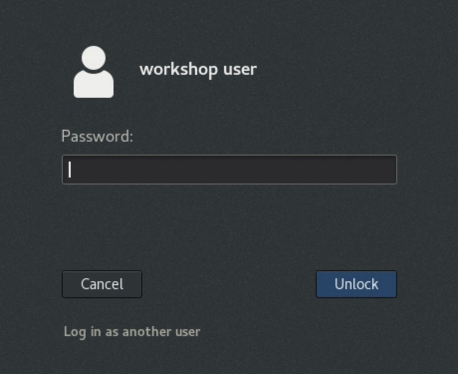

Lab Assignments¶
There are connection instructions below the table on this page.
Virtual Machine & OpenShift Logins¶
| Name | Virtual Machine Password | User Number | OpenShift Username | OpenShift Password |
|---|---|---|---|---|
| Alex | qbs94bmk |
01 | user01 | p@ssw0rd |
| Carlos | z5gknmic |
02 | user02 | p@ssw0rd |
| David | bniz788d |
03 | user03 | p@ssw0rd |
| Tamas | r36nr229 |
04 | user04 | p@ssw0rd |
| Alessandro | tkawamvh |
05 | user05 | p@ssw0rd |
| Hans | uehuegf7 |
06 | user06 | p@ssw0rd |
| Jim | boutod7l |
07 | user07 | p@ssw0rd |
| TBD | lqjvf948 |
08 | user08 | p@ssw0rd |
| TBD | 5j94k0iu |
09 | user09 | p@ssw0rd |
| TBD | 9p0cg5tj |
10 | user10 | p@ssw0rd |
| TBD | kd4ayvf7 |
11 | user11 | p@ssw0rd |
| TBD | kwz3dna8 |
12 | user12 | p@ssw0rd |
| TBD | bd7z4gta |
13 | user13 | p@ssw0rd |
| TBD | 02gmvqap |
14 | user14 | p@ssw0rd |
| TBD | 21mqqwal |
15 | user15 | p@ssw0rd |
| TBD | h3wsxxjm |
16 | user16 | p@ssw0rd |
| TBD | 8p3tbbx9 |
17 | user17 | p@ssw0rd |
| TBD | 4sr5g9ic |
18 | user18 | p@ssw0rd |
| TBD | 1dd62qd1 |
19 | user19 | p@ssw0rd |
| TBD | 55riruoy |
20 | user20 | p@ssw0rd |
| TBD | 8gjadraj |
21 | user21 | p@ssw0rd |
| TBD | gdk97oqv |
22 | user22 | p@ssw0rd |
| TBD | mvhcn36k |
23 | user23 | p@ssw0rd |
| TBD | fr1ypf3i |
24 | user24 | p@ssw0rd |
| TBD | eihvmbbs |
25 | user25 | p@ssw0rd |
| TBD | lqn6nqgp |
26 | user26 | p@ssw0rd |
| TBD | i9uswpz9 |
27 | user27 | p@ssw0rd |
| TBD | kkav47jd |
28 | user28 | p@ssw0rd |
| TBD | nvz8supm |
29 | user29 | p@ssw0rd |
| TBD | zzd2ngy9 |
30 | user30 | p@ssw0rd |
Connecting to your RHEL Virtual Desktop¶
-
Click the link to your personal virtual machine and enter the Virtual Machine Password provided on the table.
-
Click the box for the RHEL desktop that should be green and running.

-
Log into the RHEL desktop with the password:
p@ssw0rd.
 Important
Important Each virtual machine has a 3 hour inactivity timer. If you exceed this timeout, you can restart the virtual machine, but this will log you off of the VPN. If this happens, reach out to an instructor and they will log back into the VPN for you.